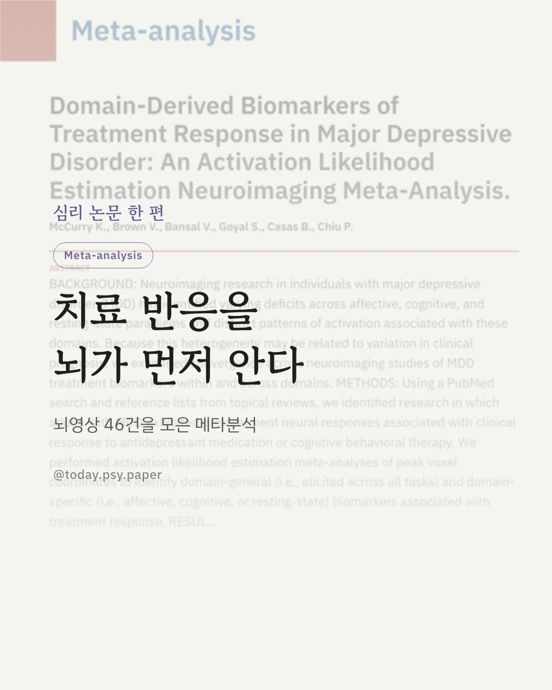
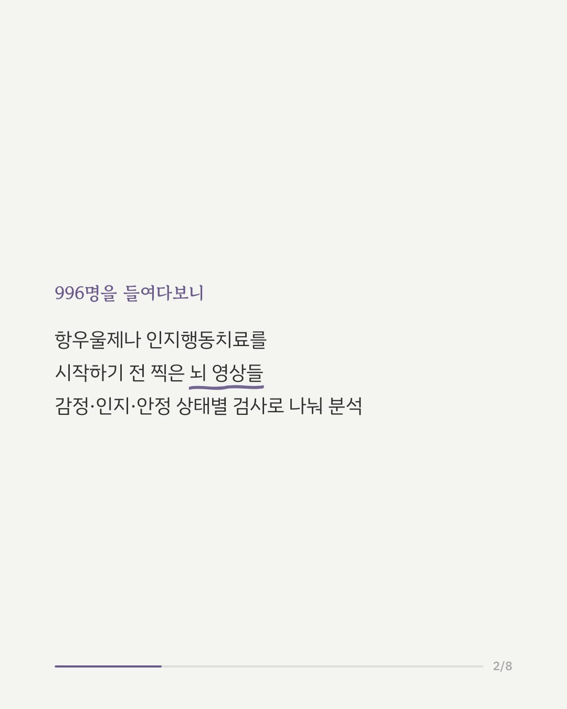
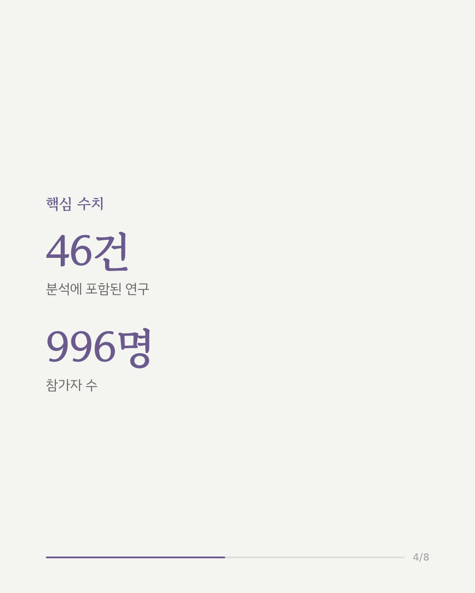
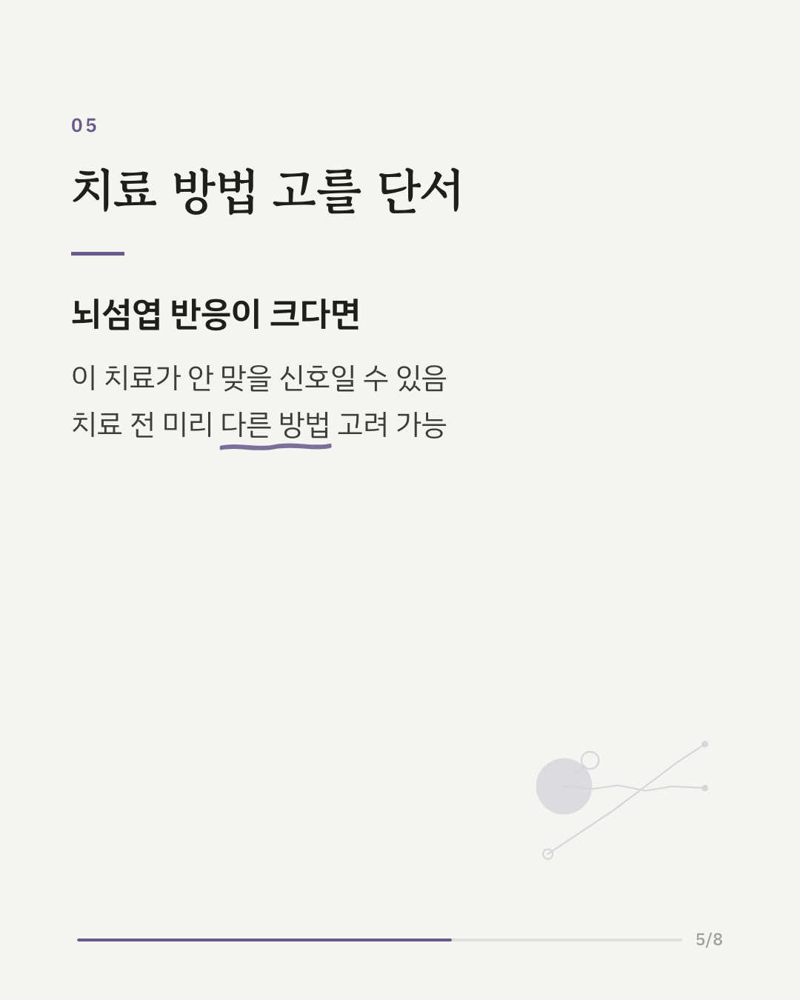
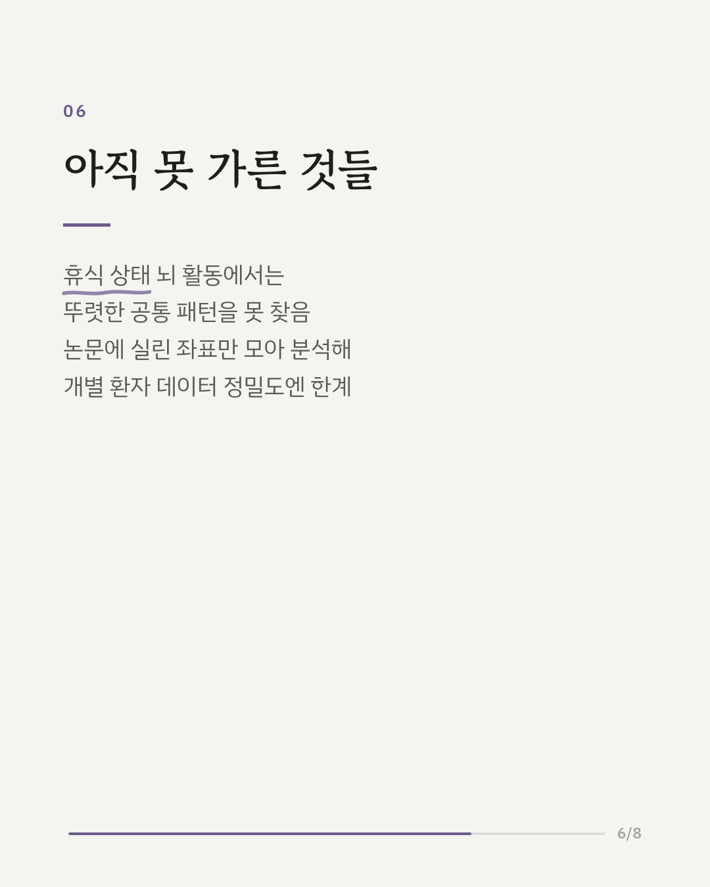
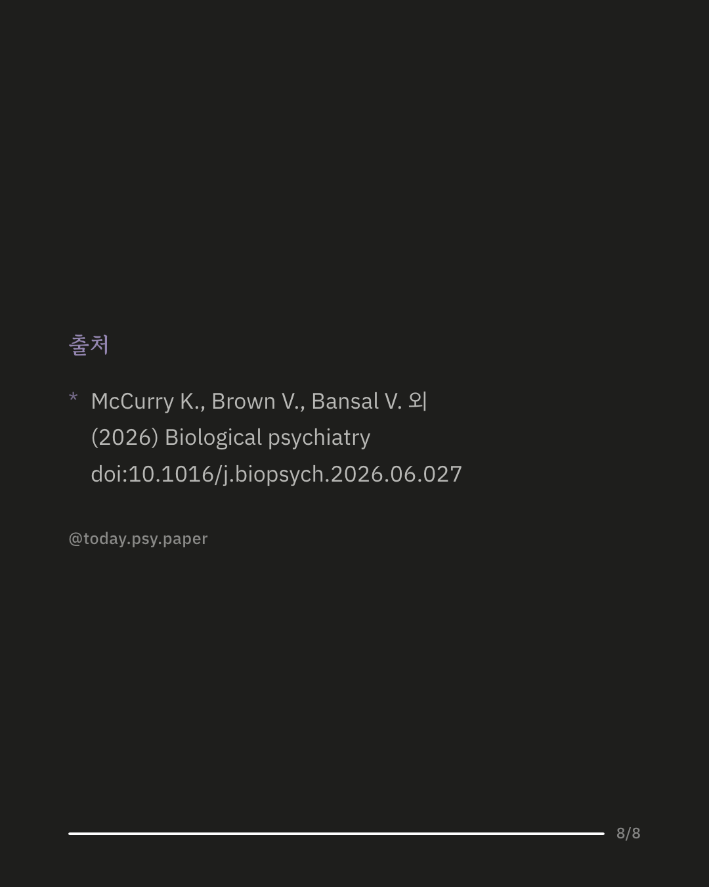

우울증 치료를 시작하기 전, 효과가 있을지 여부를 알 수 있을까요. 이번 연구는 항우울제나 인지행동치료를 받기 전 촬영한 뇌 영상 자료를 모아, 치료 반응을 예측할 수 있는 단서를 찾았습니다. 46건의 연구, 996명의 자료를 모아 분석한 결과, 우측 뇌섬엽이라는 뇌 영역의 활동이 두드러진 사람일수록 치료 후 증상이 잘 나아지지 않는 경향이 나타났습니다. 이 부위는 감정·인지·안정 상태를 다루는 여러 종류의 검사에서 공통적으로 나타났고, 특히 부정적인 감정을 다루는 과제에서는 슬하 전대상피질이라는 부위도 함께 관련이 있었습니다. 반면 가만히 쉬는 상태의 뇌 활동에서는 뚜렷한 공통 패턴을 찾지 못했고, 치료가 잘 들을 것이라는 신호가 되는 뇌 활동도 확인되지 않았습니다. 이 연구는 논문에 실린 활성화 좌표를 모아 분석한 메타분석이라, 개별 환자의 데이터를 직접 들여다본 것은 아니라는 한계가 있습니다. 뇌섬엽과 슬하 전대상피질은 다양한 정신질환 및 정서 조절과 관련해서 공통적으로 나타나는 뇌 영역이기도 합니다. 그래서 뇌 활동의 변화가 치료 반응성을 낮추는지, 아니면 이미 심각한 상태이기 때문에 치료 반응성이 낮아지는 것인지는 명확하게 알 수는 없지만, 이러한 뇌 영역의 활성화가 치료 반응과도 관련이 있다는 것은 흥미로운 지점입니다. 출처: Biological Psychiatry (2026), 'Domain-Derived Biomarkers of Treatment Response in Major Depressive Disorder: An Activation Likelihood Estimation Neuroimaging Meta-Analysis' DOI: 10.1016/j.biopsych.2026.06.027 #임상심리 #정신건강정보 #심리학연구 #논문리뷰 #우울증 #뇌과학 #신경과학 #치료반응
python3 publish.py 42413809